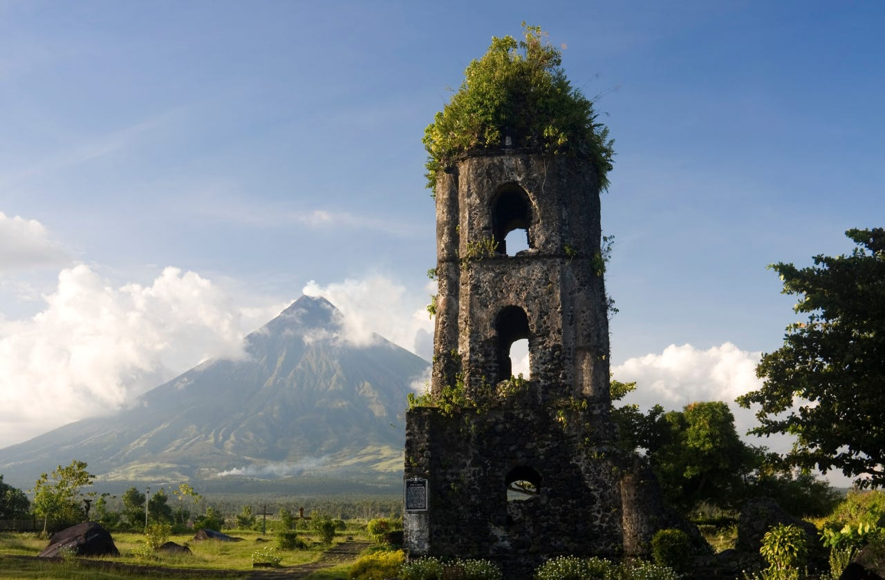

ABOUT THE RUINS
Cagsawa Ruins is a famous historical site located in Daraga, Albay. It features the remains of an 18th-century Franciscan church. Today, it serves as a premier park where tourists and photographers capture the iconic image of the bell tower against the backdrop of Mayon Volcano.

A TRAGIC HISTORY
The original church was tragically destroyed during the catastrophic 1814 eruption of Mayon Volcano. Only the resilient belfry remains standing today. It serves as a powerful reminder of both the tragedy and the incredible resilience of the Bicolano people.
FACTS
Historical data and location details.
- Location: Daraga, Albay
- Event: 1814 Eruption
- Structure: Church Bell Tower
- Status: National Cultural Treasure
TRAVEL TIPS
Advice for your historical visit.
- 👟 Footwear: Wear comfortable walking shoes.
- 📸 Photography: Visit early for the best lighting.
- ⚠️ Safety: Please avoid climbing on the ruins.
- 🥤 Prep: Bring water as the park can get warm.
THINGS TO DO
Explore the park and its history.
Guided Tours
Historical Markers
Souvenir Shopping
Photography
Local Food
Don't forget to try the Sili Ice Cream often sold by vendors nearby!